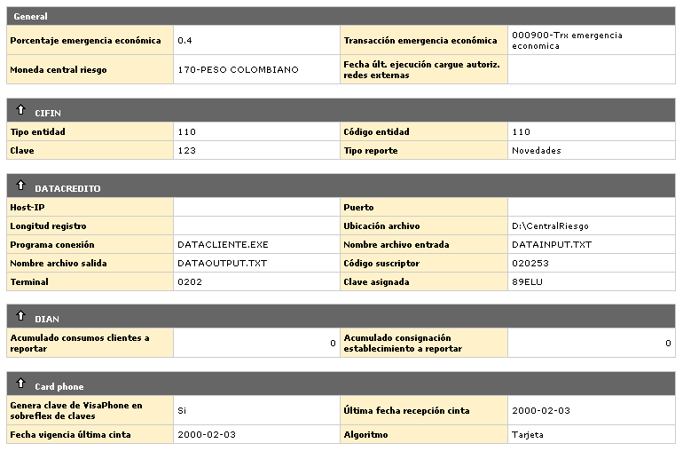
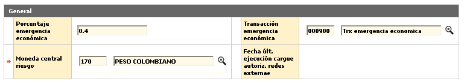
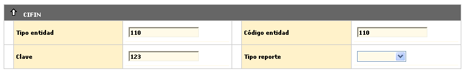
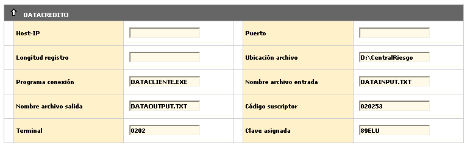
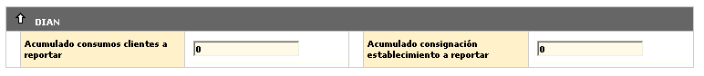
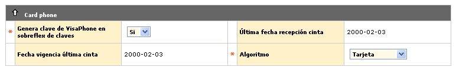

|
Parámetros operativos |
Localización del Emisor: El formulario inicial muestra el Detalle de los parámetros de localización, y tiene las opciones Actualizar y el botón para regresar al formulario principal Emisor.

Actualizar: Si el usuario invoca la opción Actualizar se despliega un formulario con los siguientes bloques para modificar: General, CIFIN, Datacrédito, DIAN, y Card Phone.

Porcentaje
emergencia económica |
Campo numérico que en un máximo de 3 posiciones enteras y 4 decimales, no obligatorio, permite registrar el valor porcentual de la tasa a aplicar por dicho impuesto (conocido como tres por mil), sobre las transacciones débito (avances, consumos, comisiones, etc) y también al momento de cruzar el saldo a favor con las obligaciones que presente el cliente |
Transacción Emergencia económica |
En este campo que posee lista de valores poblada en la opción Orígenes de transacciones del grupo de Tablas reservadas del Núcleo, se debe seleccionar la transacción original correspondiente, siendo el código que identifica la transacción asociada al Impuesto de Emergencia económica o tanto por mil, calculado y liquidado sobre las transacciones débito que aplique. |
Moneda
central de riesgo |
Campo que contiene una lista de valores de donde la entidad selecciona la Moneda con la cual se expresará el saldo y cupos de los créditos del cliente que se envían en la interface con destino a las centrales de riesgo; teniendo en cuenta que, éstos podrían estar expresados en una moneda diferente a la local y requieren ser expresados en una de conocimiento general. |
Fecha
última ejecución cargue autorizaciones redes externas |
Campo en formato YYYY-MM-DD, que registra la última fecha en que se ejecutó el cargue de autorizaciones de avances en redes externas (Servibanca, Redeban, etc.). |

Tipo entidad |
Campo alfanumérico de 3 dígitos, no obligatorio, contiene el código asignado por CIFIN al tipo de entidad financiera en el cual se cataloga la empresa que se está parametrizando. |
Código
entidad |
En este campo alfanumérico de 3 dígitos, no obligatorio, se indica el código asignado por la CIFIN a la entidad financiera que se está parametrizando. |
Clave |
Campo alfanumérico de 18 dígitos, no obligatorio, asignado por la CIFIN y que identifica a cada entidad financiera de manera exclusiva. |
Tipo reporte |
Este campo posee lista de valores adjunta de la cual se puede seleccionar entre Novedades o Refresco el tipo de reporte a generar para la CIFIN. |

Host-IP |
Campo que indica la dirección http con la cual el sistema se debe conectar para intercambiar información en línea. |
Puerto |
En este campo se registra de ser necesario, la dirección o nombre del puerto a utilizar para intercambiar información en línea entre la entidad y DATACREDITO |
Longitud registro |
Este campo indica la cantidad de caracteres que componen el registro, con el fin de hacer mas fácil el intercambio de información en línea. |
Ubicación de archivo |
En este campo se registra la ruta de ubicación de los archivos de salida junto con la información del cliente de la entidad y los archivos de entrada con la calificación enviada a DATACREDITO |
Programa conexión |
Este campo permite registrar el nombre de un software especial (si es necesario) para realizar la conexión en línea con DATACREDITO |
Nombre archivo entrada |
Campo que muestra el nombre de archivo que es enviado por DATACREDITO; el cuál contiene información de clientes y que es solicitado por la entidad. |
Nombre archivo salida |
Campo que muestra el nombre de archivo que es enviado a DATACREDITO; el cuál contiene información detallada de las deudas de clientes que pertenecen a la entidad; así como su comportamiento financiero y la información solicitada por ellos. |
Código suscriptor |
Campo alfanumérico de 6 dígitos, no obligatorio, contiene el código asignado por Datacrédito a la entidad financiera. Este código debe ser reportado en la interface y debe corresponder al que le fue asignado por esta entidad externa. |
Terminal |
Número que permite identificar el código de la terminal a través de la cual se realiza la comunicación en línea con DATACREDITO. |
Clave asignada |
Campo que muestra la clave asignada por DATACREDITO y que identifica a cada entidad financiera de manera exclusiva. |

Acumulado consumos clientes a reportar |
Campo numérico de 16 dígitos, no obligatorio, que contiene un valor de control definido por el ente de Administración de Impuestos, y que sirve de base para que cualquier tarjetahabiente que haya efectuado consumos acumulados durante el año, con tarjeta de crédito, por un monto igual o superior al estipulado, deba ser reportado a la DIAN en la interface respectiva. |
Acumulado consignación establecimiento a reportar |
Este campo numérico de 16 dígitos, no obligatorio, contiene un valor de control para los establecimientos definido por el ente Administrador de Impuestos. Si un establecimiento presenta consignaciones acumuladas durante el año, por concepto de movimiento con tarjetas de crédito (o débito), por un valor igual o superior al definido en éste parámetro deberá ser reportado a la DIAN mediante la interface correspondiente. |

Genera clave de Card phone en sobreflex |
En este campo la entidad señala si al momento de generar los sobreflex de claves de PIN, se debe incluir o no en el sobreflex la clave para servicio telefónico (Visaphone/Masterphone, etc.). En caso de que éste parámetro no se encuentre marcado, se interpretará que en los sobreflex solo irá el número del PIN. |
Ultima fecha recepción cinta |
Campo en formato YYYY-MM-DD que contiene parámetro de control y registra cuál fue la última fecha de la cinta de Servicio Telefónico (Visa phone, Masterphone), recibida y cargada al sistema. |
Fecha vigencia última cinta |
Este campo en formato YYYY-MM-DD, contiene la fecha hasta la cual se considera vigente la cinta de Servicio Telefónico. |
Algoritmo |
Campo con lista de valores adjunta de la cual se debe seleccionar entre número de Identificación del cliente o de la Tarjeta, el valor a tomar como base para ejecutar el algoritmo utilizado para calcular la clave para el Servicio Telefónico (Visaphone, Masterphone, etc.). |
Volver a Emisor | Ir a Adquirente | Localización Adquirente